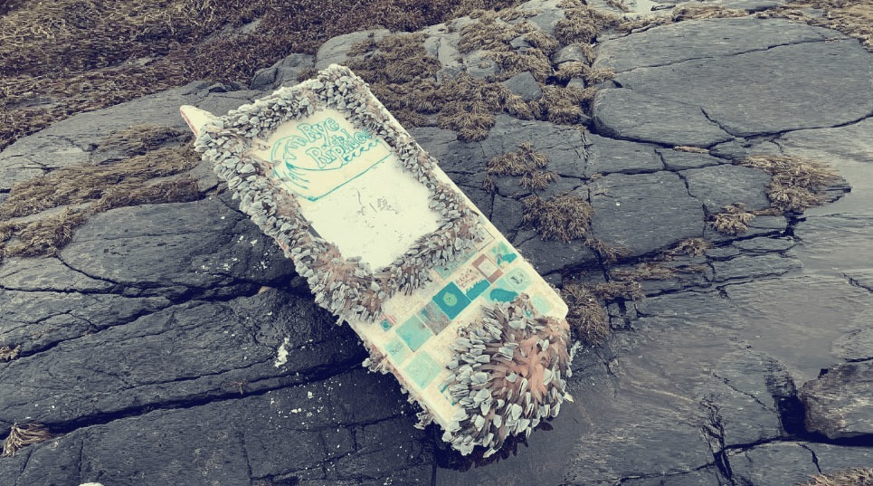
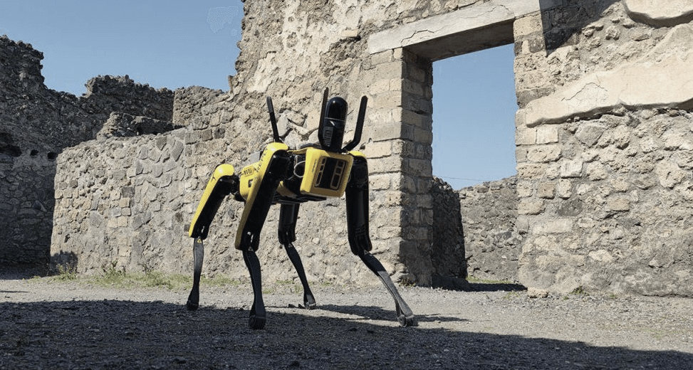
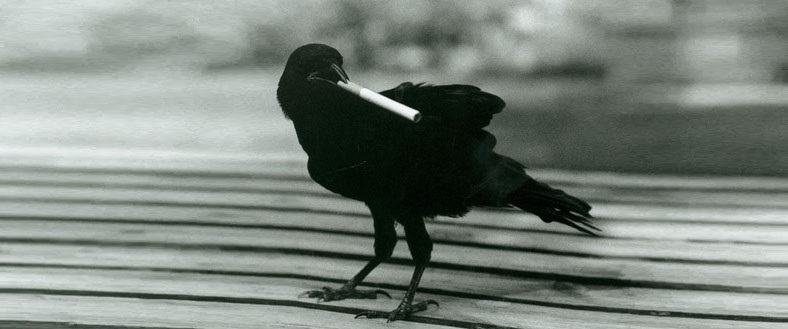
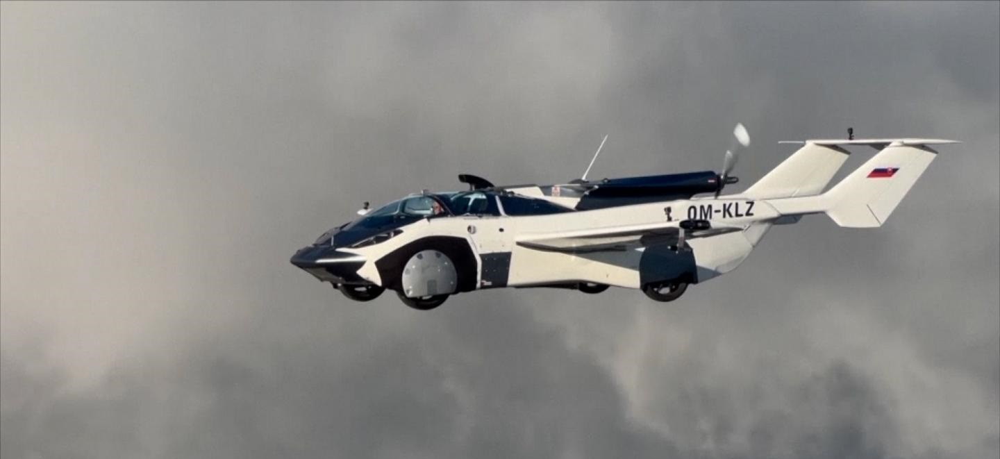

Технологии электронного носа помогут различать виски
Исследователи из Технологического университета Сиднея в Австралии разработали NOS.E, устройство, которое может найти различия между виски, «нюхая» их.
Опытные любители виски считают, что они могут почувствовать разницу, вкус и запах между первоклассными спиртными напитками и дешевым «суррогатом».
Но даже самые искушенные ценители все равно могут стать жертвами мошенничества, которое, вы наверное и не знали, становится растущей проблемой для индустрии виски.
Исследователи надеются изменить это с помощью разработки электронного носа, который может идентифицировать различные марки и даже происхождение виски по “запаху” образца.
Детский кораблик преодолел 8000 миль

В начале февраля на норвежском острове Смела (Smøla) была найдена миниатюрная лодка длиной пять футов, построенная учениками в Нью-Гэмпшире еще в 2020 году.
Маленькая лодка преодолела более 8000 миль (почти 13 000 километров) через Атлантику за 462 дня.
Учащиеся средней школы Rye Jr. High School начали строить детский кораблик как научный проект, чтобы узнать о течениях, естественных науках и математике.
Робопес поможет в сохранении Помпей

Четвероногий робопес по кличке Спот был отправлен в Помпеи для сбора данных о возможных разрушениях в древних руинах.
Робот может автономно перемещаться по труднопроходимой местности и способен осматривать даже самые маленькие помещения в полной безопасности, собирая и записывая данные, полезные для изучения и планирования необходимых реставрационных работ.
В сборе мусора задействуют ворон

Окурки сигарет давно уже стали проблемой, над которой бьются не только «зелёные», но и коммунальщики. Сегодня в мире насчитывается около 4,5 триллионов выброшенных окурков.
В Швеции компания под названием Corvid Cleaning пошла по необычному пути - в сборе мусора задействуют ворон.
За каждый сданный окурок птицы зарабатывают еду. Они собирают сигареты, а затем бросают их в специально сконструированную машину. Кристиан Гюнтер-Ханссен, основатель Corvid Cleaning, говорит, что в эксперименте участвуют дикие птицы, но убирают они “на добровольной основе”.
В настоящее время эта схема проходит обкатку в рамках пилотного проекта, так как в Corvid Cleaning хотят оценить влияние такой «работы» на здоровье ворон.
Летающий автомобиль получил разрешение на использование

Первый в мире летающий автомобиль недавно получил сертификат о летной пригодности от Транспортного управления Словакии (Slovakian Transport Authority).
Ещё в июне прошлого года этот автомобиль впервые развернул свои механические крылья и взлетел со взлетно-посадочной полосы в городе Нитра в Словакии, а через 35 минут приземлился в Братиславе.
После того, как он сложил крылья, экзотически выглядящее спортивное авто прокатило по шоссе.
После этого аэрокар уже 200 раз взлетал и садился, налетав в общей сложности 700 часов. теперь же авиационный регулятор Словакии официально заявили, что он надежен и безопасен.